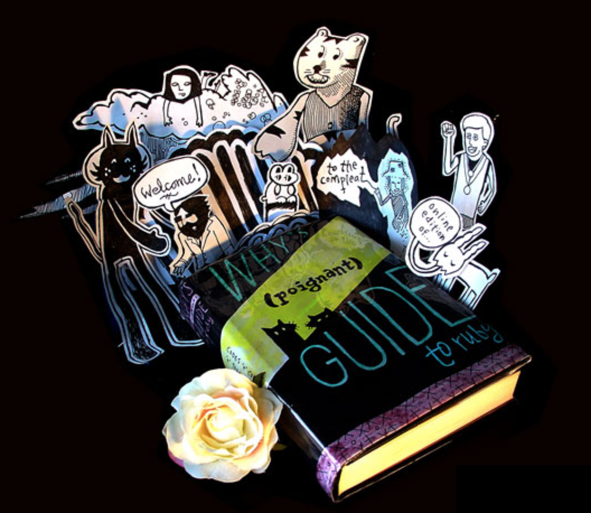
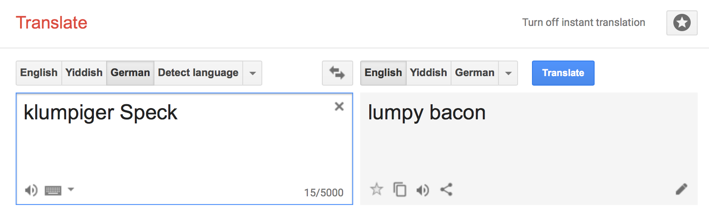

layout: false class: center, middle ??? TODO: - Disable OS notifications. - - IF YOU NEED SLACK ALERTS FROM THE HOST THOUGH, MAY WANT TO LEAVE THEM ON. - - (sharing in some online tools will hide the video feed from everyone else). - Shut down other apps. - Adjust the presenter notes font size. - Reload, then Clone (`c` shortcut). --- ??? Before I get going, given the current state of things with the internet these days, concerns about privacy and folks struggling to have control over their own information, I just need to say this: everything I’m about to say is off the record. --- class: center, middle .center[] ??? Greetings, my name is Chris Morris - I’m the director of engineering for Mystery Science - NOT Theater 3000 - nerds WE make awesome science videos and activities for elementary age kids. If you wanna come help save the next generation’s brains, come join us. 5 years ago, on this very spot, in Portland, I gave a lightning talk on Impostor Syndrome. I've returned today, 5 years in the future, to talk about something completely different. --- .center[<img src="profile.github.png" width="50%" />] ??? This is my profile on GitHub. I’m not showing this to you to brag about the huge number of repos I’ve forked and never done anything with, nor is it to share my joy over it being the only online service where I’ve been able to obtain my preferred login name without having to resort to *CLICK* creativity. (slide of charismuerte at UHC and twitter, etc. steam) --- .center[] ??? (Twitter showing). Like *CLICK* this. --- .center[] ??? (Steam showing). Or *CLICK* this. --- .center[<img src="profile.myuhc.png" width="50%" />] ??? (UHC showing). But also to pay tribute to Why the Lucky Stiff with my *CLICK* avatar --- .center[<img src="profile.myuhc.png" width="50%" />] ??? of a cartoon fox that he drew, and I might be in copyright violation of. --- .center[<img src="whyday.org.orig.png" width="50%" />] ??? 7-and-a-half years ago, on the internet, my friend Glenn Vanderburg started this site whyday.org ... --- .center[] ??? which today has clearly been taken over by a very lonely German. --- .center[] ??? Who's into sports betting on goats and Bingo. --- .center[<img src="why.documentary.png" width="50%" />] ??? 5-and-a-half years ago, not on this very spot, at RubyConf, a wonderful documentary on _why by Kevin Triplett was shown, but we don't have time to show it, this is a lightning talk, I don't even have time to talk about it much less show the trailer, so we'll just skip to the part --- .center[] ??? of the book --- .center[] ??? that why wrote --- .center[] ??? about Ruby --- .center[<img src="guide.foxes.png" width="50%" />] ??? where cartoon foxes show up --- .center[] ??? and start saying chunky bacon. So ... who's into conspiracies? Don't raise your hands you fools! That's what they _want_ you to do. --- .center[<img src="translate.eng.to.germ.png" width="50%" />] ??? If we translate “chunky bacon” into German and then BACK into English we get our first clue. --- .center[] ??? “Lumpy bacon.” If we translate THAT into a “Y” language --- .center[<img src="translate.lumpy.to.yiddish.png" width="50%" />] ??? Yiddish, for example, and then back. We get --- .center[<img src="translate.yiddish.to.lipy.png" width="50%" />] ??? “Lipy Bacon”. Now ... .... I have no idea what that is - but LOOK AT THIS. --- .center[] ??? Did I mean “Lipsy Bacon” - Why, of course I meant that. --- .center[] ??? With a search on that, then an obvious connection through Ralph Lauren --- .center[<img src="search.flbbt.zoom.png" width="50%" />] ??? we find a rare thing on the the internet - a PentaGooglewhack. --- .center[] ??? But not only that. A five-part term PentaGooglewhack. A meta-penta googlewhack. We only have to scroll down on the page to see who is SPONSORING this insanity. --- .center[<img src="search.stitch.fix.png" width="50%" />] ??? Stitch Fix. - Exactly - a sponsor of this very conference. And we know what this means. --- .center[<img src="anagrams.stitch.fix.png" width="50%" />] ??? Stitch Fix HAS NO ANAGRAMS. NONE. I mean for crying out loud --- .center[] ??? my own name has 43! Including such obvious ones as “Mr. Cirrhosis” --- .center[<img src="profile.mr.c.png" width="50%" />] ??? (pause) --- .center[<img src="anagrams.stitch.fix.png" width="50%" />] ??? How does Stitch Fix have zero? That makes it an anagram prime. A prime-a-gram. [BIG]: Which obviously means ... --- .center[<img src="cryptocurrency.png" width="50%" />] ??? [fast]: I’ve started a cryptocurrency based on websites with prime-a-gram domain names. --- .center[] ??? Pizza.com is the only other one I’ve found so far BUT !!! if you join me in the hall after this you can get in on the ground floor. --- .center[<img src="minswan.png" width="50%" />] ??? We in the Ruby community have this acronym. Who knows this one? What are you doing? You don't have a microphone, no one can hear you. It means Matz Is Nice So We Are Nice. Except me, I'm kind of being a jerk. But it's ok, I have Impostor Syndrome, so I'm not really a jerk. --- .center[<img src="matz.png" width="50%" />] ??? If Matz is the father of our community, --- .center[<img src="why.png" width="50%" />] ??? _why is clearly the guy who crashed your kid's bar mitzvah, but brought along his DJ gear and saved YOUR chunky bacon after you showed up with an dead iPod and left the charging cable back in Jersey. --- .center[] ??? We owe _why more than a site that's been devoured by lonely gambling addicted Germans. Seven years ago, this very day, if today were August 19th, I created a special term in honor of whyday. Now, like any good conspiracy, I've lied to you. I've tricked you. --- .center[<img src="anagrams.stitch.fix.png" width="50%" />] ??? I told you Stitch Fix has no anagrams. It clearly has the number one there. Correct? Programmers?! But there is a term that truly has NO anagrams, because it's pure nonsense. --- .center[] ??? And like any good developer, I registered that domain, and today am unveiling wicswac.org: --- .center[] ??? Why Is Chunky, So We Are Chunky. What kind of bacon did the foxes want? Chunky. What’s special about Chunky? --- .center[<img src="bacon.thick.png" width="50%" />] ??? It’s thick. --- .center[<img src="bacon.lux.png" width="50%" />] ??? It’s luxurious. --- .center[<img src="bacon.generous.png" width="50%" />] ??? It’s ... generous. So - ask yourself - What Would Why Do? --- .center[<img src="kip.png" width="50%" />] ??? Like anyone could even know that. --- # You ??? You do you. Nobody wants skimpy bacon. Be generous. And --- .center[<img src="bacon.chunky.png" width="50%" />] ??? Be Chunky.